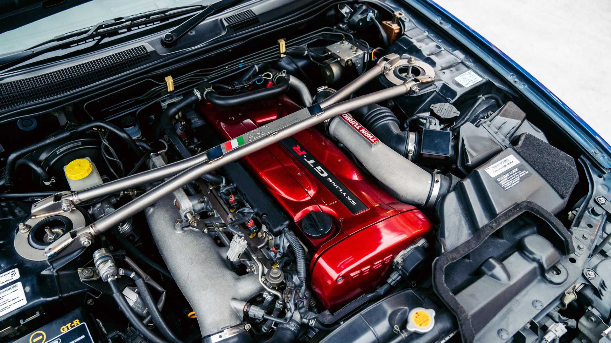
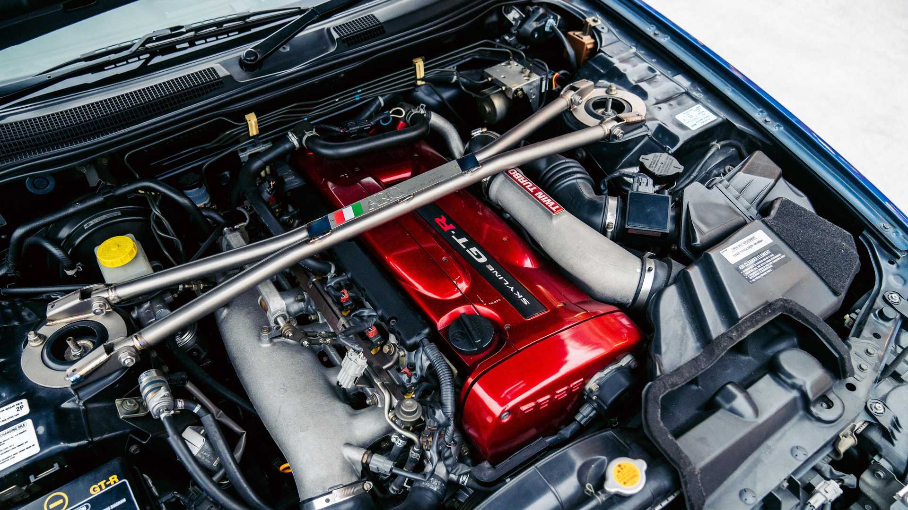

The Nissan Skyline GT-R (Japanese: 日産・スカイラインGT-R, Hepburn: Nissan Sukairain GT-R)
is a Japanese sports car based on the Nissan Skyline range. The first cars named "Skyline GT-R"
were produced between 1969 and 1972 under the model code KPGC10, and were successful in
Japanese touring car racing events. This model was followed by a brief production
run of second-generation cars, under model code KPGC110, in 1973.
 
